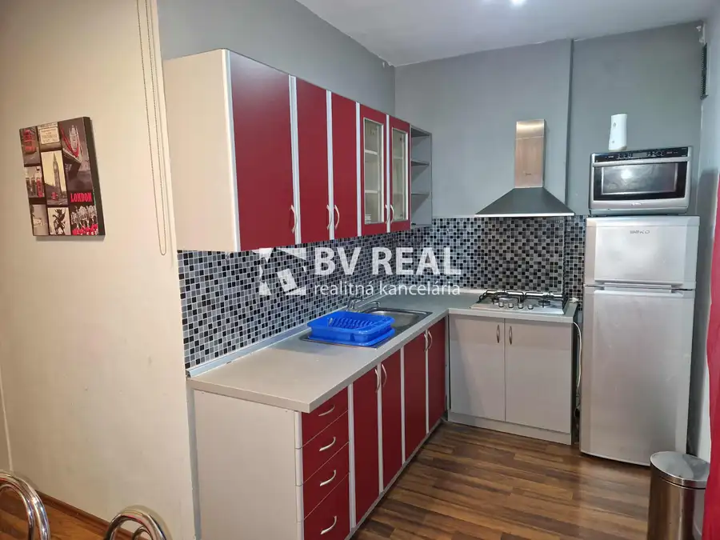
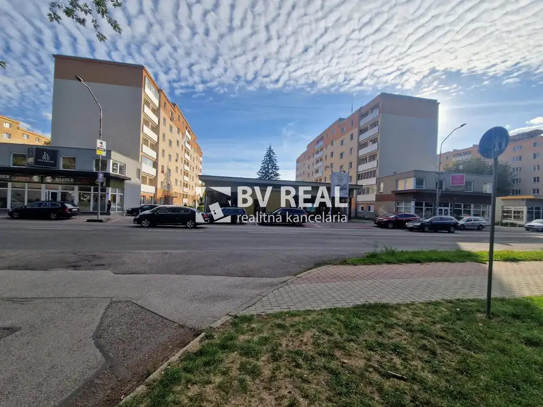
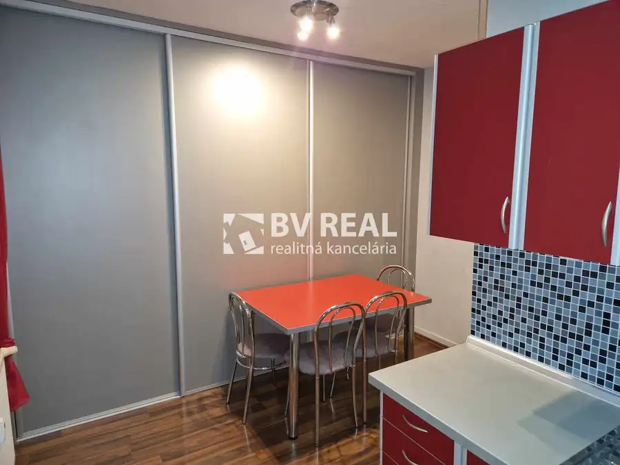

BV REAL Na predaj chata Lehota pod Vtáčnikom Sekaniny FM2538
Lehota pod Vtáčnikom
- Plocha21 m²
- StavKompletná rekonštrukcia
- VlastníctvoOsobné
O nehnuteľnosti
Realitný maklér Fazika Miroslav a BV REAL realitná kancelária ponúka na predaj chatu s elektrikou obec Lehota pod Vtáčnikom okres Prievidza.Nachádza sa v srdci prírody v chatovej oblasti Sekaniny neďaleko lyžiarskeho strediska.Je to chatka po kompletnej prerábke vyhotovená z pôvodnej unimobunky.Pozostáva s dvoch miestností.Prvá je vstupná miestnosť s kuchynkou a posedením so stolom a stoličkami, stolík, kreslo, mikrovlnka, TV.Druhá miestnosť je oddychová na spanie s posteľami, gaučom, stolíkom, skriňa, poličky a daľšie TV.Chatka sa zateplila vrátane podlahy, z vnútra obitá drevom, nová podlaha, kuchynská linka, nové kachle na pevné palivo, vonkajšie žalúzie, dlažba pred chatkou.Rozloha chatky je 21 m2.Možnosť kúrenia je buď kachlami alebo elektrickým ohrievačom.Vedľa chatky je urobené posedenie, kde je možné si grilovať, opekať, nachádza sa tam aj latrína, pár mestrov pod chatou tečie potôčik, z ktorého je urobené čerpadlo na vodu do zásobníka vody na podstavci pri chate.Ku chatke je možnosť sa dostať aj autom (odporúčame terénne auto).Lyžiarsky vlek je mimo sezóny využívaný pre nadšencov Bike športu.V obci je kompletná občianska vybavenosť, kompletná sieť obchodov, škola, škôlka, plaváreň, prímestná doprava.Obec Lehota pod Vtáčnikom je len 15 km od okresného mesta Prievidza.Len 17 km od obce je kúpeľné mesto Bojnice, zámok, ZOO, kúpalisko Čajka, vyhliadková veža.Odporúčanie makléra: kludná lokalita, pekná okolitá príroda, neďaleko aj les, čo uvítajú nadšenci hubárčenia.Cena je 22000€ a je konečná, neplatíte nič navyše.V cene nehnuteľnosti je okrem sprostredkovania, predaja a kúpy:- uhradenie správneho poplatku za návrh na vklad kúpnej zmluvy do katastra nehnuteľností- uhradenie poplatku za osvedčenie podpisov na kúpnej zmluve- poradenstvo / vybavenie financovania na mieru (Spolupracujeme so všetkými bankami)- poistné poradenstvo / vybavenie poisteniaMožnosť platby v hotovosti aj na úver. Úver vám bezplatne vybaví náš hypotekárny a úverový špecialista.Termín obhliadky si môžete dohodnúť na tel.č. 0918 709 037, alebo mailom: mfazika@bvreal.sk alebo osobne v kancelárii BV REAL.Web makléra: www.fazikamiroslav.skČíslo zákazky FM2538
Parametre
| Druh | Chalupa, rekreačný domček |
|---|---|
| Dátum zverejnenia | 7. 10. 2026 |
| Plocha pozemku | 120 m² |
| Počet izieb / miestností | 2 |
| Stav nehnuteľnosti | Kompletná rekonštrukcia |
| Typ | Predaj |
| Vlastníctvo | Osobné |
| Zastavaná plocha | 21 m² |
| Úžitková plocha | 21 m² |
Kde to je


Mohlo by Vás zaujímať

BytNové10 87 990 €BV REAL na predaj 2 izbový byt Prievidza FM2536 Prievidza 2-izbový51 m²2. podlažie Realitný maklér Fazika Miroslav a BV REAL realitná kancelária ponúka na predaj 2 izbový byt v meste Prievidza.Nachádza sa na Starom sídlisku na ulici…
Komerčné priestoryNové10 Cena dohodouBV REAL Na prenájom lukratívna budova 540 m2 Prievidza FM2535 Prievidza 540 m² Realitný maklér Fazika Miroslav a BV REAL realitná kancelária ponúka na prenájom lukratívnú budovu 540 m2 v Prievidzi na ulici Bojnická cesta.Výhoda…
BytNové10 Cena dohodouBV REAL na prenájom 2 izbový byt Prievidza FM2537 Prievidza 2-izbový51 m²2. podlažie Realitný maklér Fazika Miroslav a BV REAL realitná kancelária ponúka na prenájom 2 izbový byt v meste Prievidza.Nachádza sa na Starom sídlisku na…